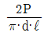
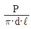
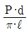

화약류관리산업기사 (2017-03-05 기출문제)
1과목: 일반화약학
1. 연화제조 시 발염제 중 스트론튬화합물은 무슨색을 내기 위한 물질인가?
- 황색
- 적색
- 청색
- 백색
(정답률: 알수없음)

2. 화약류에 대한 설명 중 틀린 것은?
- 초안유제폭약(ANFO)은 질산암모늄과 연료유가 중성분이다.
- TNT는 니트로화합물이다.
- 카알릿(Carlit)은 질산칼륨이 주성분이다.
- 암모날(Ammonal)은 질산암모늄과 알루미늄이 주성분이다.
(정답률: 알수없음)
3. 절대압력이 4×104kgf/m2이고, 온도가 15℃인 공기의 밀도는 약 몇 kg/m3인가? (단, 공기의 기체상수는 29.27kgfㆍm/kgㆍK이다.)
- 발파약
- 작약
- 전폭약
- 점화약
(정답률: 알수없음)
4. 구리(동)관체에 아지화납 기폭력을 사용하지 못하는 주된 이유는?
- 구리의 백열작용 때문에
- 구리의 발열반응 때문에
- 아지화납의 흡열반응 때문에
- 아지화동이 생성되기 때문에
(정답률: 알수없음)
5. 다음 중화약류 제조시 원료배합에 있어서 산소평형 값을 약간 plus(+) 값으로 하는 편이 발생 가스와 관련된 안전상 유리한 경우는?
- 노천발파
- 갱내발파
- 트렌치발파
- 수중발파
(정답률: 알수없음)
6. 화약류의 용도에 대한 설명으로 틀린 것은?
- DDNP는 기폭약으로 사용하는 화합화약류이다.
- 에멀젼폭약은 폭파약으로 사용하는 혼합화약류이다.
- 티엔티는 군용 작약으로 많이 사용하는데 융점이 높아 용융 장전하는 탄약에 적당하지 못하다.
- 다이너마이트는 폭파약으로 사용하는 혼합화약류이다.
(정답률: 알수없음)
7. 국내에서 산업용 뇌관의 치폭약으로 사용되고 있는 것은?
- 피크르산
- 흑색가루화약
- 펜트리트
- 디아조디니트르페놀
(정답률: 알수없음)
8. 피크린산의 단점으로 거리가 먼 것은?
- 중금속과 반응하여 예민한 염을 만든다.
- 인체에 대한 독성이 강하다.
- 피부조직을 황색으로 물들인다.
- 열적 안정성이 좋지 않다.
(정답률: 알수없음)
9. 용도에 의한 화약류를 분류할 때 무연화약이 해당하는 것은?
- 화공품
- 발치약
- 기폭약
- 파괴약
(정답률: 알수없음)
10. 화약류의 폭발 또는 연소로 생성될 수 있는 다음 가스 중 가장 유해한 것은?
- CO2
- H2O
- N2
- NO2
(정답률: 알수없음)
11. 젤리된 다이너마이트를 단동구포 시험한 결과 흔들림 각도가 16도였다. 상대중량강도(RWS)로 옳은 것은? (단, 기준폭약인 블라스팅 다이너마이트의 흔들림 각도는 18도이다.)
- 79
- 85
- 90
- 95
(정답률: 알수없음)
12. 다음 중 니트로계(-NO2) 화합화약류에 해당하는 것은?
- 트리니트로아니졸
- 니트로구아니딘
- 테트릴
- 헥소겐
(정답률: 알수없음)
13. 비전기뇌관의 점화장치인 플라스틱 튜브 내벽에 도포하는 화약으로 맞는 것은?
- HMX
- DDNP
- 흑색화약
- TNT
(정답률: 알수없음)
14. 디니트로벤젠의 주용도를 옳게 설명한 것은?
- 기폭제로 사용한다.
- 폭약의 예감제로 사용한다.
- 작약으로 사용한다.
- 도화선 심약으로 사용한다.
(정답률: 알수없음)
15. 15℃에서 TNT 10g을 주석종이로 싸서 8호 뇌관으로 트라우즐 연주시험을 하고 연주에 물을 부으니 371cc이었다. 연주 확대치는 얼마인가?
- 300cc
- 310cc
- 320cc
- 330cc
(정답률: 알수없음)
16. 다음 중 폐약처리에 NaOH 수용액을 사용할 수 없는 것은?
- 뇌홍
- 질화남
- 디아조디니트로페놀
- 테트리세
(정답률: 알수없음)
17. 흑색화약의 원효로 사용되는 것은?
- 석유
- 질산칼륨
- 소금
- 염소산칼륨
(정답률: 알수없음)
18. 질산암모늄 유제폭약(ANFO)의 성질이 아닌 것은?
- NH4NO3와 연료유를 주성분으로 한 폭약이다.
- 예감제로서 6% 이하의 니트로글리세린을 혼입한다.
- 수공에 사용할 수 없고 장기저장이 어렵다.
- 충격감도가 둔하고 가격이 싸다.
(정답률: 알수없음)
19. 화약류를 성능에 의한 분류 중 폭약이 아닌 것은?
- 흑색화약
- 뇌홍
- PETN
- RDX
(정답률: 알수없음)
20. 화약의 안정도 시험법에 해당하는 것은?
- 유리산 시험
- 순폭시험
- 마찰시험
- 둔성폭약시험
(정답률: 알수없음)
2과목: 발파공학
21. 경사공 심발 발파와 관계가 없는 것은?
- V Cut
- Pyramid Cut
- Slot Cut
- Fan Cut
(정답률: 알수없음)
22. 길이 8m, 폭 3m인 5자유면 암체를 절단하기 위한 최적 발파공파는? (단, 1 발파공당 절단면적 6.19m2, 구멍지름 32mm)
- 4공
- 6공
- 8공
- 10공
(정답률: 알수없음)
23. 평행공 심발법인 coromant cut에 대한 설명으로 옳지 않은 것은?
- 소단면 갱도에서 1발파당 굴진길이를 Burn cut 보다 더 길게 할 수 있다.
- 천공 예정 함벽에 안내판을 사용하여 천공배치가 정확하게 된다.
- 저렴하고 간단한 보조 기구 없이도 미숙련 작업자도 용이하게 천공할 수 있다.
- 파쇄 암석이 가일층 균일하므로 적재 능력이 향상된다.
(정답률: 알수없음)
24. Devine이 실험식으로 제시한 발파진동과 거리, 장약량의 관계식은 V=H(D/WL/2)-β?(단, V:최대 입자속도, H, β: 상수, D: 폭원으로부터의 거리, W: 지발당 최대장약량)
- 발파 진동속도는 거리에 비례하고 장약량에 반비례한다.
- 발파 진동속도는 장약량 및 거리에 반비례한다.
- 발파 진동속도는 장약량 및 거리에 비례한다.
- 발파 진동속도는 장약량에 비례하고 거리에 반비례한다.
(정답률: 알수없음)
25. 하우저 공식에서 발파계수를 구성하고 있는 변수가 아닌 것은?
- 암석향력 계수
- 폭약위력 계수
- 전색계수
- 탄성계수
(정답률: 알수없음)
26. 계단식 수중 천공발파 설계에 대한 설명으로 옳은 것은?
- 수작공의 비장약량(Kg/m3)은 경사공의 경우보다 10% 감소시켜 적용한다.
- 수압보정을 위해 비장약량을 수심 m당 0.01kg/m3씩 증가시킨다.
- 진흙층에서는 진흙층 두께 m당 0.03kg/m3의 비장약량을 증가시킨다.
- 암석층에서는 계단높이 m 당 0.02kg/m3의 비장약량을 증가시킨다.
(정답률: 알수없음)
27. 폭약의 위력상황은 천공발파시 약실의 중심으로부터 압축확대권, 분쇄권, 파괴권, 균열권으로 진행하면서 폭력이 약해지고 나중에는 진동을 주면서 없어지게 된다. 인장파괴가 생기는 점위는?
- 분쇄권
- 압축확대권
- 균열권
- 진동권
(정답률: 알수없음)
28. 발파에 관한 설명으로 옳지 않은 것은?
- 시차간격이 짧을수록 파쇄도는 좋게 나타난다.
- 같은 에너지 수준에서 압축강도가 높은 암반이 파쇄도가 좋게 나타난다.
- free face의 방향은 절리 방향과 평행하게 하는 것이 바람직하다.
- 풍화대에서는 천공간격 및 장약량을 줄일 필요가 있다.
(정답률: 알수없음)
29. 전색을 하는 장점과 관련이 없는 것은?
- 발파 효과를 크게 한다.
- 발파 후 발생된 폭연을 적게 한다.
- 가스가 탄진에 점화될 위험이 적다.
- 결선의 착오를 크게 줄어 준다.
(정답률: 알수없음)
30. 다음 중 수직천공과 비교하여 직사천공의 장점으로 옳지 않은 것은?
- 자유면 반대방향의 후면 파괴 감소
- 낮은 게단 발파에서의 양호한 파쇄율
- 낮은 계단 발파에서 근거리 비산
- 느슨한 암석의 자유면 보호
(정답률: 알수없음)
31. 다음 중 재래식 해체공법과 비교하여 발파에 의한 건물 해체공법에 대한 설명으로 옳지 않은 것은?
- 공사기간의 단축 및 공사비용이 경제적이다.
- 대상체 주변 환경에 크게 영향을 받지 않는다.
- 지속적인 소음 및 분진 발행이 없다.
- 시공 대상 구조물이 다양하다.
(정답률: 알수없음)
32. 수중발파에 대한 설명으로 틀린 것은?
- 수중에 폭약을 메어 다는 형태로 발파하는 방법을 수중현수발파라 한다.
- 수중의 암석이나 구조물 표면에 부착한 상태로 발파하는 것을 수중부착발파라 한다.
- 수중에서 굴착시공을 하려면 잠수부가 수중착임기를 지참해서 천공 시 수심에 관계없이 천공할 수 있다.
- 수상에서의 절착은 수중에 로드 및 비트를 내려서 하며 로드가 충분히 보호 되도록 2중관을 사용한다.
(정답률: 알수없음)
33. 폭약이 폭발 했을 때 Jones, Hino에 의한 폭광압력은? (단, 폭약의 밀도 1.5g/cm3, 폭약의 폭속 5000m/s이다.)
- 8.2×102kgf/cm2
- 8.2×104kgf/cm2
- 9.8×102kgf/cm2
- 9.8×104kgf/cm2
(정답률: 알수없음)
34. 어떤 발파에서 최소저항선이 2m, 장약량이 되었다. 같은 장소에서 최소 저항선이 4m일 때의 표준장약량은? (단, 발파규모계수 f(W)를 고려하지 않는다.)
- 6kg
- 12kg
- 18kg
- 24kg
(정답률: 알수없음)
35. 지하수가 많은 터널 또는 출수가 심한 노천광산에서는 어떠한 폭약을 사용하는 것이 안전한가?
- 함수폭약, 젤라틴다이너마이트
- ANFO폭약 도폭선
- 초안폭약, 정밀폭약
- 흑색화약, TNT
(정답률: 알수없음)
36. 발파에 관련된 용어 설명으로 틀린 것은?
- 부스터: 폭굉을 전체 장약으로 전파시키기 위해 사용한다.
- 비전기식뇌관: 전기적인 방법으로 기폭되지 않으므로 누전의 위험이 있는 곳에서도 사용할 수 있다.
- 여굴: 터널발파에서 최외곽공이 위력이 큰 폭약을 사용한 경우에 발생할 수 있으며, 라이닝 보강량을 증대시키는 요인이 된다.
- 발파진동: 폭약의 폭발로 인한 탄성파가 지반으로 전파되며 발생하는 진동으로서 자연지진의 진동보다 저주파수 영역에 속한다.
(정답률: 알수없음)
37. 비산의 형태에 의한 분류 중 거리가 먼 것은?
- 표준 장약량에 의한 비산
- 발파면의 전방비산
- 공저장약에 의한 비산
- 점화순서의 영향에 의한 비산
(정답률: 알수없음)
38. 저항 1.3Ω의 전기뇌관 30개를 직렬 결선에서 제발하는데 약 몇 V의 전압이 필요한가? (단, 소요전류는 1.5A, 발파 모선의 저항 및 발파가 내부저항은 0으로 한다.)
- 39.5V
- 45.5V
- 58.5V
- 65.5V
(정답률: 알수없음)
39. 공발(Blown-out shot)의 일반적인 원인으로 옳지 않은 것은?
- 암반에 많은 균열층이 있을 때
- 전색이 불충분할 때
- 약장약일 때
- 디커플링 계수가 1에 가까운 때
(정답률: 알수없음)
40. 발파원으로부터 진동을 억제하는 방법으로 거리가 먼 것은?
- 장약량의 제한
- 방진구의 설치
- MS뇌관을 사용한 진동의 상호 간섭을 이용
- 저폭속 폭약의 사용
(정답률: 알수없음)
3과목: 암석역학
41. 암석의 물리적인 성질 중 공극률에 대한 설명으로 틀린 것은?
- 공극률은 암석의 구조와 형태에 좌우된다.
- 화강암 생성 시 냉각 시간이 갈수록 공극률이 낮아진다.
- 공극률이 높으면 반드시 투수율도 높다.
- 공극률이 전체체적에 대한 공극체적 비이다.
(정답률: 알수없음)
42. 경사각이 60°인 건조한 사면 위에 육면체의 암석블록이 놓여 있다. 암적 바다 면적 2m2, 암석의 무게 2000kg, 암석 바닥과 사면 사이의 점착력 0.1kg/cm2, 마찰각 30°일 때 이 암석 블록의 미끄러짐에 대한 안전율은?
- 1.0
- 1.2
- 1.5
- 1.8
(정답률: 알수없음)
43. 지름 d(cm), 두께(dm)의 원판형 암석 시험편에 대하여 압열인장시험(Brazilian test)을 실시하여 하중 P(kg)에서 파괴되었다고 하면 이 암석 시험편의 인장강도는?




(정답률: 알수없음)
44. 현지암반의 강도를 추정하고자 한다. 다음 중 관계가 먼 요소는?
- Q값
- RMR 값
- 무결한 암석의 일축압축강도
- 무결한 암석의 체적탄성계수
(정답률: 알수없음)
45. 암석의 파괴 이론 중 전단변형률 에너지(stranin energy of distortion)설에 대한 설명으로 틀린 것은?
- 중간 주응력의 영향이 고려되고 있지 않다.
- 압축강도와 인장강도가 같게 된다.
- 전단변형률 에너지(Ws)는
 로 표시된다. (단, G: 강성률, σ1, σ2, σ3: 주응력)
로 표시된다. (단, G: 강성률, σ1, σ2, σ3: 주응력) - 인장강도(σ0)와 8면체 전단응력(τoct)의 사이에는
 와 같은 관계가 있다.
와 같은 관계가 있다.
(정답률: 알수없음)
46. x 방향의 응력(σx) 20MPa, y방향의 응력(σy) 20MPa, z방향의 응력(σx) 30MPa이 각 각 작용하는 미소직육면체의 포아송비(V)가 0.3, 탄성계수(E)가 100MPa이라면 체적변형률(εv)은?
- 0.2
- 0.28
- 0.3
- 0.35
(정답률: 알수없음)
47. N45°E의 주향과 60°NW의 경사를 갖는 절리를 경사/경사방향으로 표시한 것으로 옳은 것은?
- 60/135
- 60/045
- 60/315
- 45/060
(정답률: 알수없음)
48. 터널벽면으로부터 주위 암반 내부로 거리별 암반변위를 계측하려면, 어떤 계측방법을 사용하는가?
- 내공변위계
- AE 측정기
- 록볼트
- 지중변위계
(정답률: 알수없음)
49. 터널설계와 관련한 경험적 설계방법에 활용되는 암반의 공학적 분류법이 아닌 것은?
- Terzaghi 분류법
- Mohr-Cou.lomb 파괴이론
- RMR
- Q-system
(정답률: 알수없음)
50. 다음 중 암반의 변형성을 측정하는 시험은?
- 공내재하시험
- 수압파쇄시험
- 알반인발시험
- Lugeon시험
(정답률: 알수없음)
51. 등방성 물체의 경우 탄성정수인 영률, 강성률, 체적탄성률, 포아송비, 레임 정수(Lame’s constant)중에서 몇 개의 정수를 알면 나머지를 계산할 수 있는가?
- 1개
- 2개
- 3개
- 4개
(정답률: 알수없음)
52. 온도가 상승함에 따라 암석의 파괴에 나타나는 현상으로 볼 수 없는 것은?
- 비탄성적인 거동에 가까워진다.
- 파괴시까지 발생하는 변형량이 커진다.
- 연성적인 변형 파괴 거동을 보인다.
- 항복현상의 구분이 모호해진다.
(정답률: 알수없음)
53. 등방성 물체에 외력을 가햇을 때 종방향의 변령률이 2.5×10-3이고 횡방향의 변형률이 6.5×10-이었다. 레임 정수(Lame’s constant)는 얼마인가? (단, 영율 E=3.0×103kg/cm2)
- 1.29×105kg/cm2
- 1.33×105kg/cm2
- 4.80×105kg/cm2
- 6.94×105kg/cm2
(정답률: 알수없음)
54. 지하공동의 설계에 있어 경험적 설계방법이 적용되기 좋은 지반 조건은?
- 토피가 적은 경우
- 편압, 팽창압이 작용하는 지반
- 암반 분류가 수행될 수 있는 지반
- 굴착면의 자립이 기대되지 못하는 지반
(정답률: 알수없음)
55. 암석의 동적인 성질에 대한 설명으로 틀린 것은?
- 암석의 동적강도는 정적강도보다 크다.
- 암석은 반복되는 하중에 의해 강도가 저하된다.
- 충격파에 의한 응력은 시간과 거리에 따라 감소한다.
- 탄성적인 암석일수록 탄성과 에너지가 급격히 증가한다.
(정답률: 알수없음)
56. 일정한 크기의 하중을 계속적으로 시험편에 가하는 경우, 하중의 크기에 해당되는 탄성변형률이 순간적으로 발생한 후 계속적으로 변형률이 증가하는 현상은?
- 피로
- 크리프
- 변형률 경화
- 변형률 연화
(정답률: 알수없음)
57. 간접적으로 암석의 단축압축 강도를 측정할 수 있는 시험은?
- 브라질리언 시험
- 직접전단 시험
- 암석마모시험
- 슈미트 할머시험
(정답률: 알수없음)
58. 압축시험기 본체의 강성도(stiffness)가 50t/mm, 지압대(stiff column)의 강성도 150t/mm, 수압기(load cell)의 강성도가 300t/mm라고 하면 이 압축시험기의 전체 강성도는 얼마인가?
- 120t/mm
- 220t/mm
- 320t/mm
- 420t/mm
(정답률: 알수없음)
59. 지반을 연속체가 아닌 각각의 강성 블록으로 모델링하여 요소 각각의 분리를 허용한 기법으로, 불연속면이 발달한 암반 구간에 대해 보다 효과적인 해석기법은?
- 유한요소법
- 개별요소법
- 유한차분법
- 경계요소법
(정답률: 알수없음)
60. 물체에 작용하는 응력 상태가 σ1=0, σ2=σ3≠0일 때의 상태를 바르게 표현한 것은?
- 정수압상태
- 압축응력상태
- 인장응력상태
- 평면응력상태
(정답률: 알수없음)
4과목: 화약류 안전관리 관계 법규
61. 폭약 1톤에 해당하는 화공품의 수량으로 옳은 것은?
- 실탄 또는 공포탄: 250만개
- 총용뇌관: 100만개
- 신관 또는 화관: 50만개
- 신호뇌관: 25만개
(정답률: 알수없음)
62. 화약류 폐기시 폭발 또는 연소처리를 할 때 폐기 장소 주위에 높이 몇 m 이상의 흙둑을 설치하여야 하는가?
- 2m
- 3m
- 4m
- 5m
(정답률: 알수없음)
63. 화약류저장소 부속시설의 보안거리에 대한 설명으로 옳은 것은?
- 경비실은 제4종 보안물건에 해당하는 거리의 8분의 1
- 부속시설(경비실 제외)은 제4종 보안물건에 해당하는 거리의 3분의 1
- 경비실 제3종 보안물건에 해당하는 거리의 8분의 1
- 부속시설(경비실 제외)은 제3종 보안물건에 해당하는 거리의 3분의 1
(정답률: 알수없음)
64. 화약류의 폐기에 관한 다음 설명 중 옳은 것은? (단, 제조업자가 제조과정에서 생긴 화약류를 그 제조소 안에서 폐기하는 경우는 제외)
- 폐기하고자 하는 곳을 관할하는 경찰서장에게 허가를 받아야 한다.
- 폐기하고자 하는 곳을 관찰하는 경찰서장에게 신고를 하여야 한다.
- 폐기하고자 하는 곳을 관찰하는 지방경찰청장에게 허가를 받아야 한다.
- 폐기하고자 하는 곳을 관할하는 지방경찰청장에게 신고를 하여야 한다.
(정답률: 알수없음)
65. 다음 중 화공품에 속하지 않는 것은?
- 신관 및 화관
- 무연화약
- 미진동파쇄기
- 신호염관 및 신호화전
(정답률: 알수없음)
66. 화약류관리(제조) 보안책임자가 과실에 의해 폭발사고를 야기하여 인명을 사상케 한 경우 행정처분기준은? (단, 10명 사상일 경우)
- 면허 취소
- 6월 효력정지
- 3월 효력정지
- 1월 효력정지
(정답률: 알수없음)
67. 다음 중 위험공실에 대한 설명으로 옳은 것은?
- 제조작업을 하기 위해 제조소안에 설치된 건축물
- 발화 또는 폭발할 위험이 있는 공실
- 화약류를 일시적으로 저장하는 장소
- 동일 공실에 저장할 수 있는 화약류의 최대수량
(정답률: 알수없음)
68. 서울시 서초구와 경기도 과천시의 경계 지점에서 화약류를 사용하고자 할 때 주된 사용자가 과천시인 경우의 사용허가 신청은?
- 과천 경찰서장에게 한다.
- 서초 경찰서장에게 한다.
- 경기지방 경찰청장에게 한다.
- 서초 경찰서장 및 과천 경찰서장에게 한다.
(정답률: 알수없음)
69. 화약류의 사용허가를 받지 아니하고 화약류를 발파 또는 연소시킨 사람의 처벌로 옳은 것은?(단, 광업법 및 대통령령에 의한 예외사항은 제외)
- 10년 이하의 징역 또는 2천만원 이하의 벌금의 형
- 5년 이하의 징역 또는 1천만원 이하의 벌금의 형
- 3년 이하의 징역 또는 700만원 이하의 벌금의 형
- 2년 이하의 징역 또는 500만원 이하의 벌금의 형
(정답률: 알수없음)
70. 다음 중 화약류의 제조 및 판매업허가를 받을 수 없는 사람은?
- 상해죄로 징역 1년형을 선고받고 복역 후 만기출소하여 2년 6월이 지난 사람
- 음주교통사고로 징역 6월에 집행유예 1년을 선고받고 아무런 행위 없이 25개월이 경과한 사람
- 아버지가 한국인이고, 어머니가 미국인으로서 한국국적을 가진 20세인 자
- 사업실패로 파산선고를 받았으나 복권되어 3월이 경과한 사람
(정답률: 알수없음)
71. 피보호건물로부터 독립하여 피뢰침 및 가공지선을 설치하는 경우, 피뢰침 및 가공지선의 각 부분은 피보호건물로부터 얼마 이상의 거리를 두어야 하는가?
- 1.5m 이상
- 2.5m 이상
- 3.5m 이상
- 4.5m 이상
(정답률: 알수없음)
72. 화약류를 운반하는 사람이 화약류운반 신고증명서를 지니지 아니하였을 경우 처벌내용으로 옳은 것은?
- 2년 이하의 징역 또는 200만원 이하의 벌금
- 3년 이하의 징역 또는 300만원 이하의 벌금
- 500만원 이하의 과태료
- 300만원 이하의 과태료
(정답률: 알수없음)
73. 지상 1급 저장소 출입문의 덧문에는 두께 얼마 이상의 철판으로 보강하여야 하는가?
- 1mm 이상
- 2mm 이상
- 3mm 이상
- 4mm 이상
(정답률: 알수없음)
74. 화약류 1급 저장소에 저장할 수 있는 화약류의 최대저장량으로 옳은 것은?
- 총용뇌관 5000만개
- 도폭산 1500km
- 미진동파쇄기 300만개
- 실탄 및 공포탄 6000만개
(정답률: 알수없음)
75. 화약류 운반방법의 기술상의 기준으로 옳지 않은 것은?
- 화약류의 운반은 자동차(2륜 자동차 포함)에 의하여야 한다.
- 200km 이상의 거리를 운반하는 때에는 도중에 운전자를 교체할 수 있도록 예비운전자 1명 이상을 태워야 한다.
- 운반자동차에는 경계요원을 태워야 한다.
- 뇌훙 및 뇌홍을 주로 하는 기폭약은 수분 또는 알코올분이 25% 정도 머금은 상태로 운반해야 한다.
(정답률: 알수없음)
76. 다음 중 화약류 제조업자의 결격사유 기준으로 옳지 않은 것은?
- 금고 이상의 형의 선고를 받고 그 집행이 끝나거나 집행을 받지 아니하기로 확정된 후 3년이 지나지 아니한 사람
- 금고 이상의 형의 집행유예를 선고받고 그 유예의 기간이 끝난 날부터 2년이 지나지 아니한 사람
- 20세 미만인 사람
- 파산선고를 받은 사람으로서 복권되지 아니한 사람
(정답률: 알수없음)
77. 대발파의 기술상의 기준 중 갱도의 굴진작업을 하는 때에 대한 내용으로 옳은 것은?
- 그 작업에 필요한 최대량의 화약류와 최소량의 여분 화약류만 가지고 들어갈 것
- 그 작업에 필요한 양의 최대 2배 이하의 화약류만 가지고 들어갈 것
- 그 작업에 필요한 양의 최대 2배 이하의 화약류와 0.5배 이하의 여분 화약류만 가지고 들어갈 것
- 그 작업에 필요한 최소량의 화약류만 가지고 들어갈 것
(정답률: 알수없음)
78. 운반신고를 하지 아니하고 운반할 수 있는 화약류의 종류 및 수량으로 틀린 것은?
- 총용뇌관 10만개
- 폭약 25kg
- 미진동파쇄기 5,000개
- 폭발천공기 600개
(정답률: 알수없음)
79. 화약류의 안정도시험에 사용하는 시험기 등과 관계가 없는 것은?
- 청색리트머스시험지
- 가열시험기
- 순폭시험기
- 표준색지
(정답률: 알수없음)
80. 사용허가를 받지 아니하고 영화 또는 연극의 효과를 위하여 1일 동일한 장소에서 사용할 수 있는 꽃불류의 수량으로 옳지 않은 것은? (단, 소아 올리는 꽃불류는 제외)
- 원료화약 또는 폭약 15g 미만의 꽃불류 50개 이하
- 원료화약 또는 폭약 15g 이상 30g 미만의 꽃불류 30개 이하
- 원료화약 또는 특약 30g 이상 50g 이하의 꽃불류 10개 이하
- 발연통ㆍ촬영조명통 또는 폭약(폭발음을 내는것에 한한다.) 0.1g 이하의 꽃불류
(정답률: 알수없음)